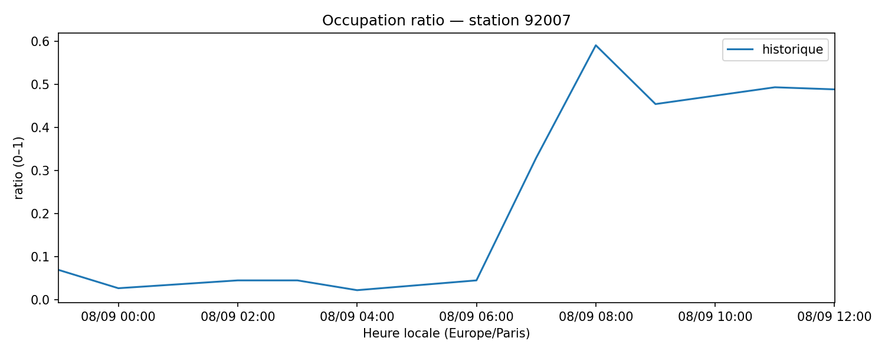
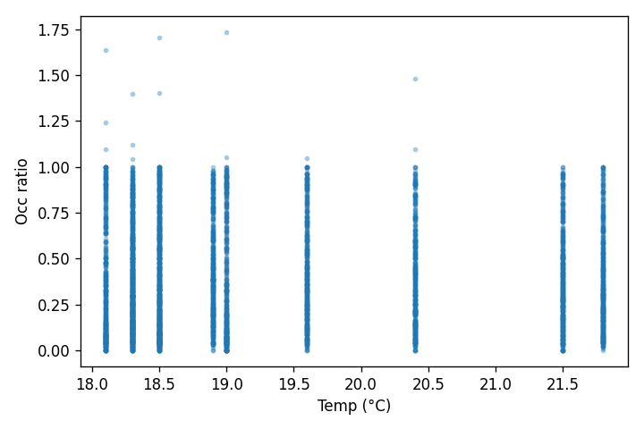

Results
Snapshots: 74068 • Stations: 1453 • Last (UTC): 2025-09-08 12:31:42.093539
Historique couvert : 2025-09-08 01:00:00+02:00 → 2025-09-08 14:00:00+02:00
Stations : 1453
(Heure affichée : Europe/Paris)
Example (historique + forecast 24h)

Corrélation simple
Relation occ_ratio vs. température (échantillon) 
Top 10 stations les plus volatiles
| stationcode | name | std_occ |
|---|---|---|
| 15056 | Place Balard | 0.512 |
| 21021 | Enfants du Paradis - Peupliers | 0.5 |
| 33019 | Madeleine Vionnet | 0.499 |
| 9023 | Laffitte - Italiens | 0.464 |
| 8103 | Artois - Berri | 0.461 |
| 15125 | Parc Suzanne Lenglen | 0.452 |
| 8049 | Georges V - François 1er | 0.45 |
| 15058 | Place du Moulin de Javel | 0.449 |
| 16201 | Porte Dauphine | 0.448 |
| 15042 | Henry Farman | 0.439 |